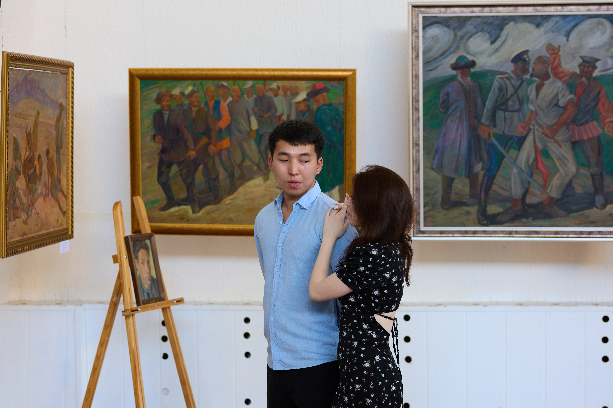

17 ОКТЯБРЬ 2026
ҮЙЛӨНҮҮ ҮЛПӨТҮ
БИШКЕК ШААРЫ
«Эки жүрөктүн махабаты,
бир өмүрдүн башталышы»
Ардактуу коноктор!
Сиздерди балдарыбыз Өмүрбек менен Салиянын үйлөнүү үлпөт тоюна арналган салтанатка кадырлуу коногубуз болуп кетүүгө чакырабыз!
КҮНҮ ЖАНА УБАКТЫСЫ
17-ОКТЯБРЬ
Саат: 17:00дө
ТОЙ ӨТКӨРҮЛҮҮЧҮ ЖЕР
Бишкек ш.
Той ээлери:
Сиздерди ак дилибизден күтөбүз!
Биз үчүн эң чоң белек — сиздердин келгениңиздер жана жылуу куттуу сөздөрүңүздөр.
Келүүгө убада берүүңүздөр — биздин жүрөгүбүзгө эң чоң кубаныч!